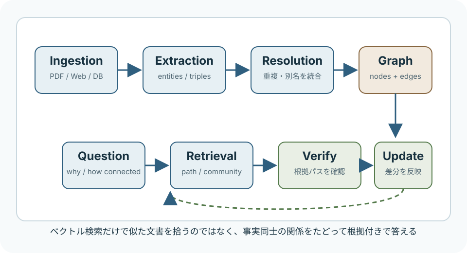

AI / GraphRAG
Graph Engineeringとは何か
Xの長文記事で語られているGraph Engineeringは、単なる「グラフっぽい図」ではなく、文書から事実と関係を抽出し、知識グラフとして保存し、質問時に関係パスをたどって根拠付きで答えるRAG設計です。
簡潔なQ&A
- Q. この記事でいうGraph Engineeringとは何か？
- A. 文書チャンクを意味検索するだけでなく、エンティティ、出来事、因果、所属、時系列などをノードとエッジにして、質問時にその関係を検索・検証する設計です。
- Q. 普通のRAGと何が違うのか？
- A. 普通のRAGは「質問に似た文書」を探します。Graph Engineeringは「AとBがどうつながっているか」「なぜそうなったか」を、グラフ上の経路として探します。
- Q. 記事の主張はそのまま信じてよいのか？
- A. 方向性は妥当ですが、「特定モデルが最適」「何%改善」といった数値は、特定条件のベンチマークや記事側の解釈です。自分のデータで測る前提で読むのが安全です。

記事の中心主張
記事の主張は、「複雑な質問では、文書片の類似検索だけでは限界がある」というものです。たとえば売上低下の理由を知りたいとき、原因がリリース遅延、サプライヤー問題、倉庫障害、レビュー悪化、CVR低下のように複数文書へ分散していると、単純なベクトル検索はつながりを取り逃がしやすくなります。
そこで記事は、文書をそのまま探すのではなく、事実と関係を構造化して保存する発想を推します。つまり「この段落はサプライチェーンに関する文書だ」ではなく、「この障害がこの遅延を引き起こし、その遅延がこの売上影響につながった」といった関係を保存します。
普通のRAGとの違い
| 観点 | 標準的なRAG | Graph Engineering |
|---|---|---|
| 検索対象 | 文書チャンク、段落、埋め込みベクトル | エンティティ、事実、関係、時系列、根拠 |
| 得意な質問 | 「何が書かれているか」「どの文書が近いか」 | 「なぜ起きたか」「AとBはどう関係するか」 |
| 失敗しやすい点 | 原因の鎖、間接関係、複数文書にまたがる推論 | 抽出ミス、名寄せミス、関係の過剰推論 |
| 品質管理 | チャンク設計、再ランキング、引用 | スキーマ、根拠引用、関係タイプ、矛盾検出、更新履歴 |
8層のアーキテクチャとして読む
記事ではGraph Engineeringを、だいたい次の8層で構成されるパイプラインとして説明しています。
- Ingestion: PDF、Web、DB、API、チャットログなどの生データを集める。
- Extraction: LLMで人物、組織、製品、出来事、関係を構造化JSONとして抽出する。
- Resolution: 表記ゆれや別名を名寄せし、同一エンティティの重複を防ぐ。
- Storage: Neo4jなどのグラフDB、またはグラフ的に扱えるDBへ保存する。
- Retrieval: ベクトル検索、エンティティ検索、パス検索、コミュニティ検索、時系列フィルタを組み合わせる。
- Agent: LLMが質問を分解し、必要な検索やCypher生成を行い、足りない情報を追加で探す。
- Verification: 回答が取得されたパスに支えられているか、矛盾や根拠不足がないかを確認する。
- Update: 新しい事実を追加し、矛盾は上書きせずレビュー対象にし、古い情報には時刻を持たせる。
ここで大事なのは、記事内に出てくるプロンプト例はこの各層を動かすための部品であって、Graph Engineeringの本体ではないことです。本体は、プロンプトをどの順番で動かし、どの状態を保存し、どこで検証するかというシステム設計です。
Kimi K3の位置づけ
記事はKimi K3をこの構成に向いたモデルとして扱っています。根拠として、Moonshot AIの公開情報では、Kimi K3は1Mトークンのコンテキスト、Kimi Delta Attention、Attention Residualsを特徴にしています。グラフ検索は、単一段落ではなく、複数ノード、関係パス、根拠文、候補サブグラフをまとめてLLMへ渡すため、長文脈を使えるモデルは確かに相性がよいです。
ただし、「Kimi K3が最良」という評価は、記事側の判断を含みます。長文脈が有利なタスクはありますが、抽出精度、ツール実行、コスト、レイテンシ、ライセンス、運用基盤まで含めると最適なモデルは用途で変わります。この記事の読み方としては、「Graph Engineeringではモデル単体の性能だけでなく、長文脈・構造化出力・低コスト実行が重要になる」と捉えるのが堅いです。
実装で一番危ないところ
Graph Engineeringは強力ですが、壊れ方もはっきりしています。まず、抽出時にLLMが本文にない関係を作ると、グラフ全体がもっともらしい誤情報の土台になります。そのため、関係を登録するたびに根拠となる原文位置や引用を持たせる必要があります。
次に、名寄せを甘くするとグラフが分裂します。同じ会社や製品が複数ノードに分かれると、検索結果が部分的になり、回答が不安定になります。逆に雑に統合しすぎると、別物を同一視してしまいます。ここは地味ですが、実務ではかなりの急所です。
さらに、隣接しているだけの関係を因果として読ませる危険があります。mentioned_with と caused_by はまったく違います。回答時には、関係タイプを明示し、推論した部分とグラフに直接ある部分を分ける必要があります。
向いている用途
- 障害原因、売上変動、顧客離脱など、複数要因のつながりを追う分析。
- 社内文書、議事録、仕様書、問い合わせ履歴を横断した「なぜ」「どう関係する」の質問。
- 法務、医療、金融、研究調査など、根拠と関係の追跡が重要な領域。
- 長期運用するAI Agentの記憶や状態管理。
向いていない用途
- FAQのように、質問と回答候補がほぼ一対一で対応する用途。
- データ量が少なく、文書をそのままLLMに渡せば十分な用途。
- 関係抽出や名寄せのメンテナンスにコストをかけられない用途。
- スキーマや根拠管理なしで、雰囲気だけグラフDBを入れたいケース。
誇張されやすい読み方
記事は「大きいモデルより良いグラフ」というメッセージを強く出しています。この方向性は、Microsoft GraphRAGや知識グラフ関連の研究と整合します。ただし、「常に小さいモデルが大きいモデルに勝つ」と読むのは過剰です。正確には、複雑な検索・根拠追跡タスクでは、モデルのサイズだけでなく、検索構造、スキーマ、検証、データ品質が回答品質を大きく左右する、という話です。
また、記事中の改善率やコスト削減率は、特定データセット、特定ベースライン、特定実装に依存します。自分の業務データで、正答率、根拠の妥当性、トークン量、レイテンシ、保守コストを測るまで、一般保証として扱うべきではありません。
要点
Graph Engineeringは「RAGにグラフDBを足すこと」ではなく、事実抽出、名寄せ、関係検索、根拠検証、更新管理をつなげたシステム設計です。複雑な「なぜ」「どうつながる」に強くなりますが、抽出・名寄せ・検証を雑にすると、普通のRAGより厄介な誤答基盤になります。